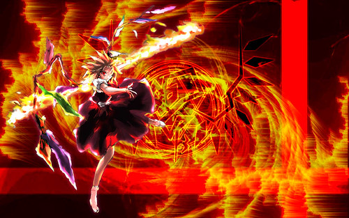
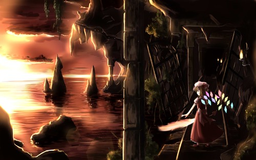
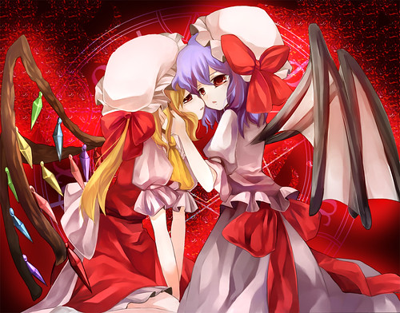
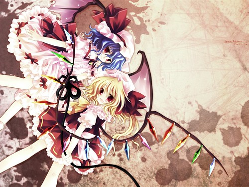

對不起我又來丟歌詞了。
『U N オーエンは彼女なのか？』向來是同人音樂改編的最愛(藍藍藍藍藍藍藍藍路~)，這首新曲「緋色月下、狂咲ノ絶」是新成立同人社團「EastNewSound」(聽名字就知道是專門作東方音樂的啦～)即將發行的第一張專輯的其中一曲。雖說社團是新的，成員可不新就是了 XD 歌手即是大家很熟悉的葉月なの(=NICO歌姬nayuta)。她的聲線被多人評價為非常像沢城みゆき，我是沒有覺得很像啦，不過感覺的確十分嬌嫩欲滴(口水)，很有聲優潛質。那句「殺してあげる」聽得我骨頭都酥了(毆)
除了像極沢城みゆき(?)的聲線外，這首歌的另一賣點是令人毛骨聳然的表歌詞和病態的裏歌詞。
旋律嘛，聽完後你就知道什麼叫作原曲完全崩壞wwwww 編曲到這種地步只能說太神了 XD
啊~~~畢竟是新歌，網上找不到其他人的評論
歌詞也是由我亂敲出來~~~有漏字之類的就多多包涵吧。
剛開始聽的時候覺得好重，後來聽得雞皮疙瘩都起來了 orz
原文的攻擊力已經很強了，中文則...更加病態。
**********************************************
| 深く朱き潤む瞳 甘い色のスカート揺らす 幼き頬 朱を染ませ 疼きに足を崩される 甘い幻視に支配され 奏でては咲く五指の調べ 赤い紅茶 滴る音 弄んでは 深く抉る 「この想い届かないのかな？」 「その瞳には誰が映るのかな？」 「心壊れているのかな？」 「壊れたら戻らないのかな？」 「刻む傷は癒えないのかな？」 「そうして時を刻むの？」 あなたのその全てが欲しくて 欲しくて震えてる （この気持ち気づいて どうして気づいてくれないの） 甘美なその鼓動を 穿ち尽くして止めようか （狂気満ちて行くわ どうすれば止まるの） その肌を穢し尽し 辱めるのは私だけ （この気持ち壊れて どこへ辿り着くのでしょうか） 愛で撫でて揺さ振らせて この衝動を殺してよ （愛溢れて行くわ 止めることはできない…） 白き肌 照らすのは 緋色月 綺麗な夜 明けるなら 染めるまで 喉を枯らし叫ウ音色 旋律は朱の虹となり 君屠る其ノ色彩 甘く深き色を放つ 喉を枯らし叫ウ音色 赤キ雨に彩られたら 綺麗な舞台の出来上がり 私独り其処で踊る 「その願い潰えたのかな？」 「その想い断たれたのかな？」 「その希望絶えたのかな？」 「その瞳焼かれたのかな？」 「その肌は穢されたかな？」 「そして誰もいなくなる？」 其ノ生を引き裂かれて 赤銀を吐き消し飛べ （どこにも本当の私なんていないのだから） 其ノ生の華散らして 極彩に咲き我が糧に （儚い命だわ 美しく愛しい） 其ノ生がお前ならば 喰らい尽くして血肉にす （永遠に私のものになるしかない） 其ノ四肢を贄と捧げ 我が足元の死屍となれ （ずっと私の傍に もういかされないから） 私の中の私が 一つの単語を 何度も何度も 一つの単語を 振り返し 歌う 掴む左手が甘くて 振るう右手が甘くて 掴む左手が甘くて 笑う口が裂けても 楽しくて 震えて 楽しくて 震えて 赤い 甘い 赤い 甘い 赤い 甘い 「殺してあげる」 其ノ生を引き裂かれて 赤銀を吐き消し飛べ （私のセカイは 綺麗なままでいて欲しいから） 其ノ生の華散らして 極彩に咲き我が糧に （思い出が舞うわ 私のものにさせて） 其ノ生がお前ならば 喰らい尽くして血肉にす （ごめんなさい これが最後の愛し方だったから） 其ノ四肢を贄と捧げ 我が足元の死屍となれ （ずっと私の傍に あなたといきたいの） | 濕潤的深紅眼眸 艷色的裙尾搖擺 幼小的臉頰浸染朱紅 疼痛令腿足都不自由 被甜美的幻視支配 伸展五指彈奏的旋律 赤色紅茶滴下的聲音 是因我在挖掘玩弄 「這份思念無法傳達嗎？」 「那雙眼眸映出的是誰？」 「心已被弄壞了嗎？」 「弄壞後不能恢復嗎？」 「受的傷害無法痊癒嗎？」 「這樣做能刻畫下時間嗎？」 我想要你的全部 想到渾身顫抖 （希望你察覺我的心情 為什麼沒有察覺到呢？） 就讓那甜美的心跳 竭盡氣力就此停止吧 （漸漸地陷入瘋狂 無論怎樣也無法抑止） 盡情弄髒那片肌膚 污辱你的只有我 （心情都被毀壞 接著該如何是好） 快點平息這份愛撫和操弄你的衝動吧 （愛就要滿溢出來 無法停止…） 緋色月光灑在雪白肌膚上 把美麗的夜晚照得通明 聲嘶力竭歌唱的音色 旋律化作朱之虹 那是屠殺你的色彩 又甜又深的顏色 聲嘶力竭歌唱的音色 紅色的雨濺遍四處 構成豪華的舞台 我獨自在上面跳舞 「願望破滅了嗎？」 「思念斷絕了嗎？」 「希望磨滅了嗎？」 「目光燃燒了嗎？」 「肌膚污穢了嗎？」 「大家都不見了嗎？」 就算把這具身體撕裂 只有赤銀煙霧擴散 （因為哪裡都不存在真正的我） 讓那具身體四分五裂 綻放鮮艷的色彩即我的糧食 （真是虛幻的生命 美麗又可愛） 如果那具身體就是你 我會將肉都吃得乾乾凈凈 （你只能永遠成為我的東西） 把四肢作為供物 讓你成為我腳邊的死屍 （一直在我身邊 再也不放你走） 我之中的我 多少遍多少遍 重複著一個單語 不斷重複 歌唱 緊握的左手很甜 揮舞的右手很甜 緊握的左手很甜 笑著的嘴巴裂著 快樂到顫抖 快樂到顫抖 好紅 好甜 好紅 好甜 好紅 好甜 「讓我殺了你」 就算把這具身體撕裂 只有赤銀煙霧擴散 （因為想要我的世界永遠保持美麗） 讓那具身體四分五裂 綻放鮮艷的色彩即我的糧食 （回憶很多 成為我的東西吧） 如果那具身體就是你 我會將肉都吃得乾乾凈凈 （對不起 這是我最後用來愛你的方式） 把四肢作為供物 讓你成為我腳邊的死屍 （一直在我身邊 我想和你在一起） |
中文歌詞翻譯 by shintaro=囧星人
（你的隨手copy+paste，可能是我花數個鐘頭的勞動成果。
原連結：http://shintaro.pixnet.net/blog/post/22705497
請保留這個訊息，包括我寫的這句話，謝謝）
**********************************************
這首歌好像比某首還18X啊？
打完歌詞我已經很想死... 再加個翻譯，腦袋都快爆炸了
-_-所以不要計較不通順的問題了...
接著來貼鬼畜妹的圖。

我以前就覺得啊，那個翅膀根本沒有飛行作用...

她老姐的也就算了，芙蘭的翅膀漏風太嚴重了不是嗎？


對了，雖然覺得應該大多數人都玩過了，這裡推薦個我以前很著迷的FLASH遊戲：
ふらふらラン～～
每個有顏色的石頭(實在不知道該叫那玩意啥)都必須在限定時間內放到芙蘭翅膀上，連成3顆時自動破碎，但有哪一邊比較重的話芙蘭就會往那邊倒，努力地讓站在塔頂的芙蘭維持平衡吧！別讓任何一邊的翅膀過重，否則妹樣會掉下去喔 XD
雖然掉下去的表情很可愛...
[ 推薦閱讀 ]
東方相關的文章目錄 - 2008